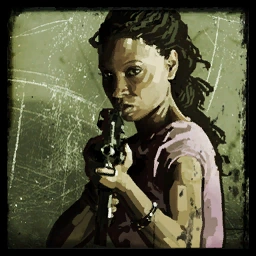

Rochelle
Rochelle, de 29 años, era una asistente de producción de una importante cadena de noticias en Cleveland. Su gran oportunidad llegó cuando la enviaron a Savannah para cubrir el brote inicial, sin saber que lo que parecía una noticia de última hora se convertiría en el fin del mundo tal como lo conocía.
A diferencia de los demás, Rochelle está acostumbrada a manejar el caos y a trabajar bajo presión. Aunque no es una experta en armas por naturaleza, su inteligencia y su capacidad para evaluar situaciones críticas rápidamente la convirtieron en una pieza clave para la supervivencia del grupo.
Rochelle es a menudo el pegamento emocional que evita que el grupo se desmorone, especialmente cuando las tensiones entre Nick y los demás suben de tono. A pesar de haber perdido su carrera y su vida anterior, mantiene una resiliencia admirable, demostrando que incluso en el apocalipsis, nunca se debe dejar de luchar por un mañana mejor.
← Volver a Personajes